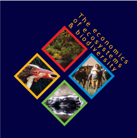
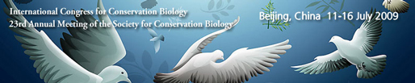
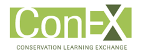

Events

Aligning Water Fund Investment
Prioritization in Latin America
September 27-29, 2011
Santo Domingo, Dominican Republic
Natural Capital Project Presentations and Links
The Nature Conservancy
Workshop on Nature's Benefits in Conservation
And InVEST 2.0 Training
February 22-25, 2011
San Ramon, CA
Natural Capital Project Presentations and Links
AAAS - American Association for the Advancement of Science
Annual Meeting: "Science Without Borders"
February 17-21, 2011
Washington, D.C.
Natural Capital Project Presentations, Printed Materials, and Links

TEEB - The Economics of Ecosystems and Biodiversity for Local and Regional Policy Makers
September 9, 2010
Natural Capital Project Case Studies

The Natural Capital Salon
May 19, 2010
Woods Institute for the Environment
Stanford University
Presentation videos, slides from each speaker, and briefs on four project demonstration sites.

International Congress for Conservation Biology and
23rd Annual Meeting of the Society for Conservation Biology
July 11-16, 2009
Beijing, China
Natural Capital Project Presentations, Printed Materials, and Links

ConEX: Conservation Learning Exchange
October 14-15, 2008
Vancouver, BC
Natural Capital Project Presentations, Printed Materials, and Links